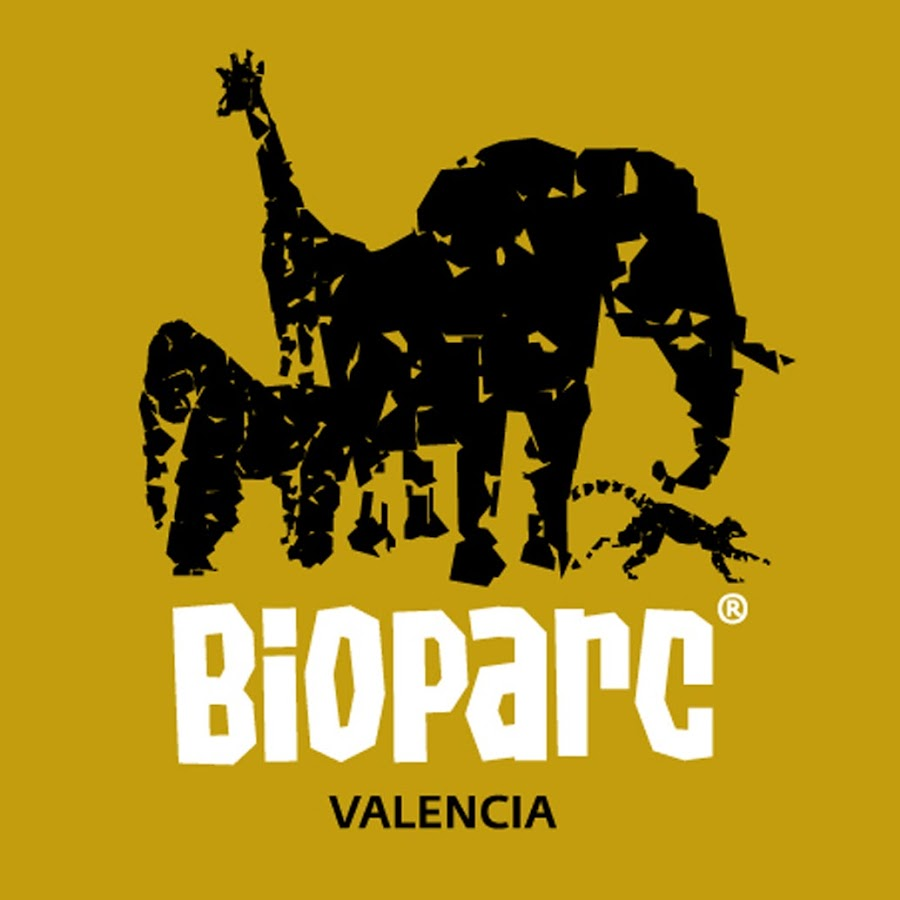

Felinos
León
Leopardo
Pantera
Jaguar
Lince

Tigre
Puma
León Blanco
Zoológicos

Bioparc
Un parque zoológico español situado en la costa mediterránea, en la ciudad de Valencia. Especializado en la fauna africana, está dividido en cuatro zonas representando cuatro biomas : sabana seca, sabana húmeda, bosques del África ecuatorial y Madagascar.
Castellar
Castellar de la Frontera, Cádiz. Santuario animal, clínica veterinaria y centro de rescate de tigres, leones y serpientes, con experiencias interactivas.
Faunia
Un jardín botánico y parque zoológico, de unas 14 hectáreas de extensión ubicado en Madrid (España). Está organizado en áreas que representan diferentes ecosistemas como la jungla, los polos o bosque africano.